我用一天半写了个小程序
读者司机们，五一好哇！
这两天突然意识到放假了，作业可以先缓一缓，又想起之前的一个想法，于是打开了微信小程序的官方文档，打算随手撸一个小程序玩一玩。想看成果的，请向下拖动看图。
想法
有一次，我需要组织一次实训迭代会议，于是我需要临时确认所有人下周什么时候有空，当时我突然发现，这就是为小程序量身定做的场景啊，于是，趁这两天道路车辆少，我，上了小程序的黑车。
启动与构思
小程序的名字随便取了个：《几时得闲》，识得唔识得啊？
这学期受到pml的熏陶，写小玩具也开始正经了- -首先简单随笔画了一个领域模型和UI、交互之类的草图：
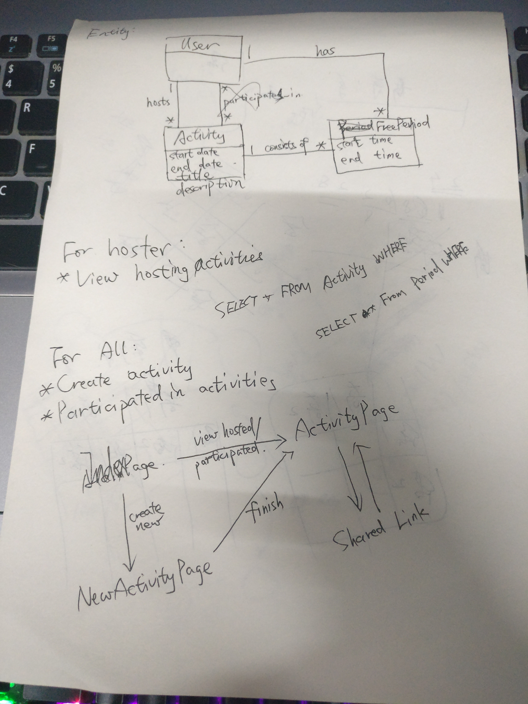
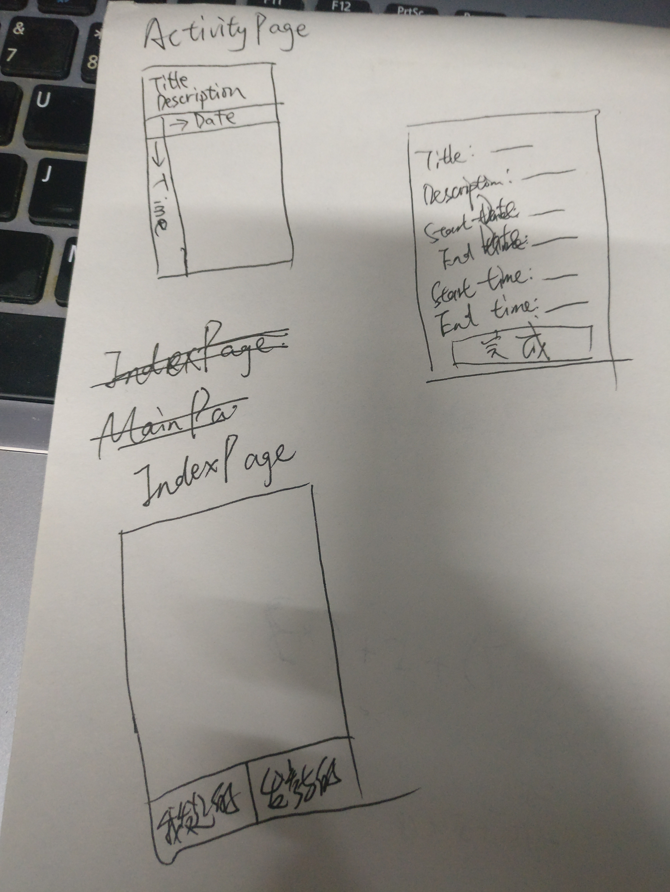
港真，画完之后思路的确清晰了很多，接下来就可以开始写代码了。
开发平台
工欲善其事，必先利其器。于是，我去官网下载了微信小程序开发平台，比较坑爹的是这货暂不支持Linux，于是我只能重启滚到装在了机械硬盘的Windows 10，下载并安装，安装好之后它是长这样的：

看起来很强，很佩服微信这么快从框架到开发工具一整套都准备好了，文档也是挺齐全的，点个赞。
小程序实际上就是跑在被魔改过的、功能很有限的浏览器里，所以前端那一套在小程序里都是类似的：wxml等价于html，wxss等价于css，js是承载页面逻辑的脚本，json文件则是配置文件。左边是预览，中间是文件列表，右边是编辑器，每次文件被更新，都会自动重新编译运行。不过写了一会之后，我发现这编辑器太难用了，虽然有自动补全，于是我果断弃坑，啊不是，果断打开了Sublime Text。
接下来，这个开发工具的主要任务就是调试。切换到调试界面之后，右半边会变成Chrome Devtool，嘿嘿……
小程序结构
一个小程序由一个App实例和若干个Page实例组成。根目录下的app.*就是App实例的定义，其中app.wxss是全局的样式文件，app.json里面有这个小程序的配置，所有Page的url等都需要在这里面声明（是的，就和AndroidManifest.xml差不多），除此以外，如果小程序的主界面是带有tab的，那么可以在这里定义每个tab对应的Page，这样就不需要自己在一个Page里实现tab特性，不过我觉得有可能多个界面都是带tab的，但是这样似乎就只有小程序的主页才是这样的，没有深究……
app.js里，官方的starter项目里给App实例定义了一个getUserInfo，其中调用小程序提供的接口获取用户授权，通过查询文档，我最后把它改成获取用户授权、得到用户的OpenID（这个ID对这个小程序而言是每个用户唯一且固定的）、将它保存到我的服务器后台（后面会说到，坑死了……），然后把数据返回。看到模板代码各种缩进，我慌了，看样子小程序原生不资瓷Promise……中午吃饭的时候查了一下，发现虽然的确有办法，但是太麻烦了，于是后来我觉得我的把回调写得优雅一些的技能被点上了。
在pages目录里，每个Page的定义相关的四个文件都放在里面，并且必须文件名（去掉扩展名）一致，微信才能找到这些页面的对应内容。按照规划，我一共编写了4个页面：我启动的活动、我参与的活动、创建新活动、查看活动。
服务器
一开始写的时候，还挺顺利的，但是后来发现，没有后台服务器的配置的话，很多地方不好写。
可是问题来了，就两天玩一玩，我就要花一大部分时间写个服务器？？
当然不可以了，于是，机智的我选择了LeanCloud，LeanCloud应该给我广告费。在LeanCloud的数据存储服务里，我可以直接定义类，指定类的各项属性，然后通过REST API来操作数据。是的，不用写一点代码，点点鼠标就配置好了。按照前面的领域模型，最终我新建了3个类：WeChatUser，FreePeriod和Activity，分别表示一个小程序用户（存储OpenID）、一个用户在一个活动里的一个空闲的小时和一个活动。其中FreePeriod的表如下：
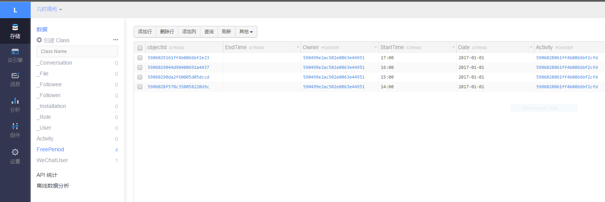
看起来非常顺利，嗯，毕竟老司机了，这一带我闭着眼睛都能开。
接下来，需要配置一下小程序，只有在合法域名列表里的域名才允许从小程序里请求，随便吐个槽，一开始我以为微信自己的域名可以不用添加（我用到了一个微信的接口获取OpenID），结果一跑，挂了，然后再去添加，还瞎了写错了域名，所以前后一共改了3次，但是小程序规定一个月只能更改五次……
在小程序的后台更改：
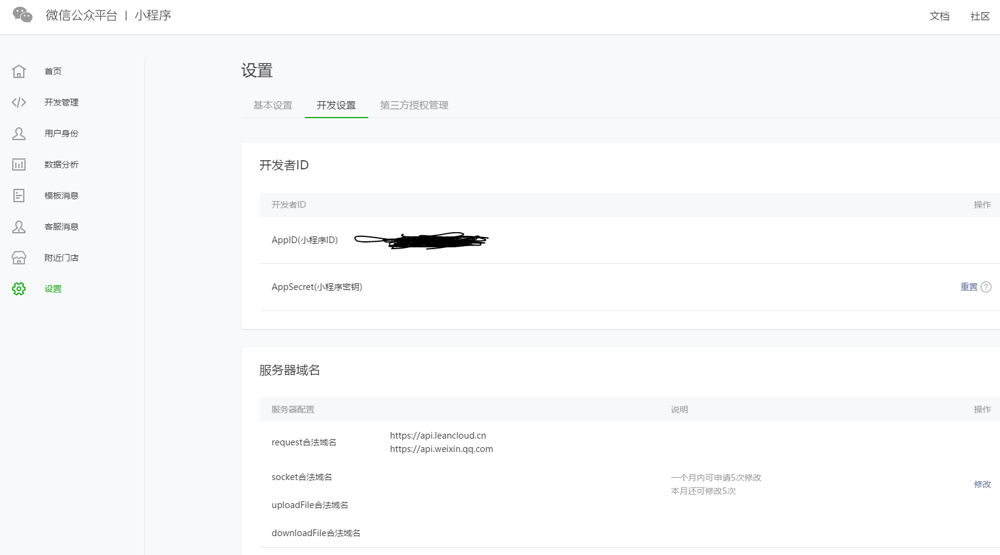
然后还需要在小程序开发工具的项目页面刷新：
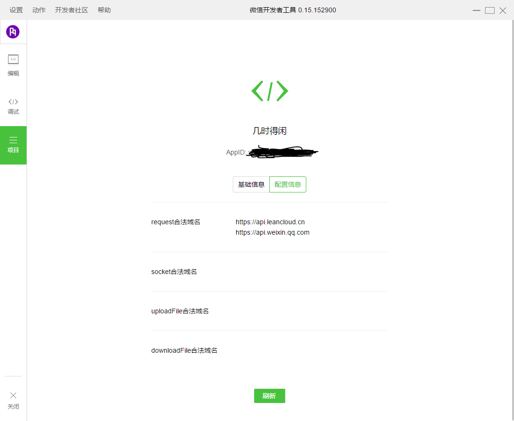
LeanCloud REST API
接下来，我就可以愉快的在小程序里发请求了。一开始，我觉得LeanCloud的API挺强大的，比如我想要获取指定OpenID的用户：
function getUserByOpenId(openId, cb) {
r(
'/classes/WeChatUser',
'GET',
'where={"OpenId":"' + openId + '"}',
(res) => {
cb(null, res.data.results.length === 0 ? null : res.data.results[0]);
},
() => {
typeof cb == 'function' && cb(new Error('Fail to get user by OpenID: Network error'));
}
);
}
其中r是我对微信里的HTTP请求接口的额外封装。可见，直接在body里按照语法写Query就行了，爽！
可是接下来问题来了：我需要获取一个用户参与的活动。这是一个多对多的关系，但是，为了简单起见，我并没有搞一个中间的关系表，而是直接在FreePeriod类里指定了Owner和Activity，也就是说，如果一个用户是某个FreePeriod的Owner，那么这个FreePeriod的Activity就是这个用户参与的活动，这在SQL里很简单（虽然我忘了），但是LeanCloud强调了，他们实现上用的是非关系型数据库……所以，我研究了半个小时也没研究出用他的语法怎样一个请求就拿到……最后，我做了两次请求（捂脸）：
function getUserParticipatedActivities(openId, cb) {
r(
'/classes/FreePeriod',
'GET',
'where={"Owner":{"$inQuery":{"where":{"OpenId":"' + openId + '"},"className":"WeChatUser"}}}',
(fpRes) => {
let as = fpRes.data.results.map((v) => {
return v.Activity.objectId;
});
// Find
r(
'/classes/Activity',
'GET',
'where={"objectId":{"$in":[' + as.map(v => { return '"' + v + '"'; }).join(',') + ']}}',
(aRes) => {
cb(null, aRes.data.results);
},
() => {
cb(new Error('Fail to fetch launched activities #2'));
}
);
},
() => {
cb(new Error('Fail to fetch launched activities #1'));
}
);
}
如上，找出用户参与的所有FreePeriod，拿到Activity的id列表，然后通过$in操作符拿。
顺便吐个槽：如果返回的是对象（比如创建、查询指定ID的对象）的时候，返回的JSON就是这个对象本身；而如果请求的是一个数组，那么返回的是一个对象，对象的results属性是一个数组。可以，这很RESTful……
自己启动的活动列表页面实现
接下来可以正式写Page了。小程序里，每个Page实例都有一系列生命周期：Load - Ready - Show - Hide - Unload。在Page对应的js里，可以定义每个生命周期里对应的回调来决定做什么，这个和Android里的那几个生命周期也是挺像的，当然如果你也这么认为那你就错了，嘿嘿。
首先，写界面，听说和vue很像，但是我没学过vue，初看之下有点当年写Angular的感觉：
<view class="launched-container">
<scroll-view class="activities-list">
<view wx:for="{{launchedActivities}}" bindtap="activityTap" data-objectid="{{item.objectId}}">
<text>{{item.Title}}</text>
</view>
</scroll-view>
<button class="launch-new-button" bindtap="ntNewActivity">Launch New</button>
</view>
在小程序里，每个标签都必须是预设的组件。我需要页面里有一个列表，列表里显示每个活动的标题，然后页面底部有个按钮添加新的活动。上面的代码还是非常好懂的，就是绑定一个数组来渲染列表，然后给每一项绑定点击回调。
为了让列表填充整个页面，把按钮顶到底部，我查了一下，发现用flex比较简单，但是按照SO上的代码却并没有什么用，一度让我认为小程序是不是对flex的支持不够。后来发现，把page标签（这个标签不在wxml里，但是用开发工具审查元素就能看到，等价于body）的高度设置为满就行了……
/*app.wxss*/
page {
height: 100%;
}
/*launched.wxss*/
.launched-container {
display: flex;
flex-direction: column;
height: 100%;
}
.activities-list {
flex-grow: 1;
}
.launch-new-button {
flex-shrink: 1;
width: 100%;
}
很好，这波很稳。最后的效果如下：
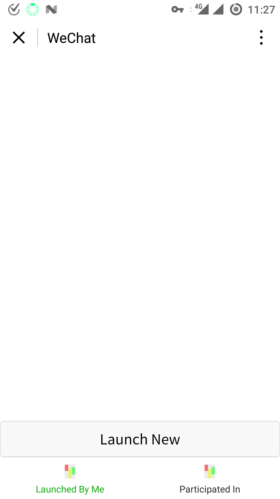
因为列表是空的，所以上面只有一个按钮。那个，图标什么的，不存在的。
新活动创建页面
接下来，开始编写新活动创建界面。查了一下小程序文档，发现了可以通过picker组件实现时间和日期选择器，excited！很棒，这是界面代码：
<view class="new-activity-container">
<form bindsubmit="fmSubmit">
<input name="title" value="{{title}}" bindinput="fmTitleInput" type="text" placeholder="Title" confirm-type="next" confirm-hold="true" />
<input name="description" value="{{description}}" bindinput="fmDescriptionInput" type="text" placeholder="Description" confirm-type="done" />
<picker name="startDate" value="{{startDate}}" bindchange="fmStartDateChange" mode="date">
<view class="picker">Start date: {{startDate}}</view>
</picker>
<picker name="endDate" value="{{endDate}}" bindchange="fmEndDateChange" mode="date">
<view class="picker">End date: {{endDate}}</view>
</picker>
<picker name="startTime" value="{{startTime}}" bindchange="fmStartTimeChange" mode="time">
<view class="picker">Start time: {{startTime}}</view>
</picker>
<picker name="endTime" value="{{endTime}}" bindchange="fmEndTimeChange" mode="time">
<view class="picker">End time: {{endTime}}</view>
</picker>
<button formType="submit">Done</button>
</form>
</view>
这里，我也被坑了。我以为把value属性做一下绑定，就能双向绑定了，结果发现改变了日期、时间之后，界面上的时间和日期并没有改变！最后问了一下室友才知道，这样只是单向绑定，需要通过上面的一大堆事件把picker、input的值被改变之后更新到js里的数据对象去，所以你们大概能猜到这个js文件有多长了……看看上面的那些bind……
另外，要改变被绑定的数据并使绑定了这些数据的UI元素跟着改变，需要使用setData来更改，贴代码如下：
Page({
data: {
userInfo: {},
title: '',
description: '',
startDate: '2017-01-01',
endDate: '2017-01-07',
startTime: '00:00',
endTime: '23:59'
},
fmTitleInput: function (e) {
this.setData({
title: e.detail.value
});
},
// ...
});
页面路由
前面我总是把小程序的东西和Android的东西做对比，但是实际上，还是要带着前端的思维去写。在小程序中，每个页面都有一个对应的url，比如查看Activity的url就是/pages/activity/activity?objectId=123，可见，url还可以带有参数，在对应的Page被加载的时候就能取到这些参数。
在主页，我需要点击添加按钮之后跳转到创建新活动的界面，可以这样写：
wx.navigateTo({
url: '/pages/new-activity/new-activity'
});
在新活动创建成功之后，我想直接关掉当前页面并调到新的页面，可以这样写：
wx.redirectTo({
url: '/pages/activity/activity?objectId=' + data.objectId
});
在activity页面里，我可以这样获得这个参数：
Page({
data:{
activityObjectId: '',
activity: {},
periods: [],
userInfo: {}
},
customData: {
periodsView: null,
headerViewHeight: 74
},
onLoad: function (options) {
this.data.activityObjectId = options.objectId;
},
// ...
}
这里我没有用setData，原因后面会说。
Activity界面实现
前方高能！！！非战斗人员迅速撤离！！！
在我的想象中，用户打开一个活动的详情页面之后，应该有一个类似Excel表的表格视图，其中列是日期，行是小时，用户点击单元格就可以标识自己在这一天的这一个小时有空或者没空，有空会高亮。而对于活动创建者，在这个页面则会把所有人的有空时间都显示出来，其中一个时间点如果越多人有空，颜色越深。
好的，那么我们的逻辑就很明确：打开页面的时候先拿到Activity的ID，然后从API拿到Activity的详细信息（标题等），包括Activity的启动者。然后，根据启动者和当前用户是否同一人，获取对应的FreePeriod列表，然后，渲染到页面上。
好的，我要开始吐槽了。
首先，是生命周期和异步调用的冲突问题。我们有一个很明显的需求：如果我把这个页面后台了，中途另一个用户添上了自己的空闲时间，然后我回到这个页面，讲道理的话页面应该更新，获取这个活动的新的FreePeriod列表。于是，这个更新过程肯定是放在Show生命周期的。而当前用户的信息（主要是ID），一般是不会改变的，只要调用一次就好了，所以我一开始丢到了Load周期。那么现在问题来了：怎样保证Show周期到达的时候，Load周期里的异步搞定了呢？答案当然是不可能保证。所以，最后我就把获取用户信息也一并丢到了Show生命周期里，来，给你看个入门的回调地狱：
onShow: function() {
let self = this;
// Get data and update
app.getUserInfo((err, info) => {
if (err) return wx.showToast({title: 'Fail to get user info'});
self.setData({
userInfo: info
});
// We can get data now
// Activity data
lcapi.getActivity(self.data.activityObjectId, (err, activityData) => {
if (err) return wx.showToast({title: 'Fail to load activity'});
self.setData({
activity: activityData
});
self.customData.periodsView && self.customData.periodsView.setData({
activity: activityData
});
// Now we can get periods data
// Period data
if (activityData.Launcher.objectId == info.objectId) {
// Launcher open, show all periods
lcapi.getPeriodsOfActivity(activityData.objectId, (err, periodsData) => {
if (err) return wx.showToast({title: 'Fail to load periods'});
self.setData({
periods: periodsData
});
self.customData.periodsView && self.customData.periodsView.setData({
periods: periodsData
});
});
} else {
// Show self periods
lcapi.getPeriodsOfActivityAndUser(activityData.objectId, info.objectId, (err, periodsData) => {
if (err) return wx.showToast({title: 'Fail to load periods'});
self.setData({
periods: periodsData
});
self.customData.periodsView && self.customData.periodsView.setData({
periods: periodsData
});
})
}
});
});
},
同样的，我在调用setData之后，仍然不敢立刻从this.data里拿数据，也是因为还不确定这个是不是异步的（虽然现在想来，应该不至于这也坑）。
第二个坑在于小程序对DOM树是没有任何权限的。你也许留意到了我在Activity里的customData里保存了一个叫做headerHeight的东西，这是因为像Excel表一样的组件是不存在的，我得在画布上自己画，所以画之前我需要拿到canvas的大小。然而，没有任何接口可以拿到DOM树的信息，所以，我无奈之下只能把顶部的标题和描述的高度写死，然后写到customData里。这一点还是不太方便的，希望小程序后面能够增加一点基本的支持。
第三个天坑就是自己绘制自定义组件。说实话，自己画了一天的类电子表格界面之后我觉得我的Android自定义View的姿势水平都有所提高了。在小程序里，要自定义的界面怎么办？自己画！画布拿来！定好颜色！抄起js就是干！
好在，这只是一个非常简单的二维表格，所以，我先自定义了一个PeriodView，持有canvas的绘制上下文，并包含必要的数据：
function PeriodsView(context) {
this.context = context;
this.viewport = {
x: 0,
y: 0,
w: 0,
h: 0
};
this.cellSize = {
w: 60,
h: 48
};
this.data = {
activity: null,
periods: [],
row: 24,
col: 5,
maxDepth: 0,
depth: []
};
this.indicatorSize = {
dateHeight: 40,
timeWidth: 60
};
this.gestures = {
lastX: 0,
lastY: 0
};
this.style = {
depthCellColors: {
min: { r: 0xE8, g: 0xF5, b: 0xE9 },
max: { r: 0x1B, g: 0x5E, b: 0x20 }
}
}
this.onCellTap = null;
}
我的思路非常简单：画布除去左边和顶部的表头，剩下的矩形大小就是viewport，我们拖动这个表格的时候，其实就是移动viewport，可以想象在一张报纸上盖上一张白纸，白纸中间挖了个矩形的窟窿。
所以，可以看到，上面的数据里，我包含了viewport的当前位置（相对于整张表格的左上角而言）和尺寸、一个格子的尺寸、数据（当前Activity、FreePeriods列表、表格的行列数、深度（后面讲）信息等）、表头的尺寸、手势信息（和触摸事件有关），以及表格颜色范围（最浅和最深）。
然后，我们就可以写个redraw函数了，这里面根据上面的信息把所有viewport能看到的格子都绘制出来。一切都是非常顺利，下面是绘制日期表头的代码：
this.context.setFillStyle('#dfdfdf');
this.context.setStrokeStyle('#000000');
for (let c = cl; c <= cr; ++c) {
// Date boxes
this.context.strokeRect(this.indicatorSize.timeWidth + c * this.cellSize.w - this.viewport.x, 0, this.cellSize.w, this.indicatorSize.dateHeight);
this.context.fillRect(this.indicatorSize.timeWidth + c * this.cellSize.w - this.viewport.x, 0, this.cellSize.w, this.indicatorSize.dateHeight);
}
接下来，我们需要在表头显示文字，本来，我的代码是类似这样的：
for (let c = cl; c <= cr; ++c) {
// Box
this.context.setFillStyle('#dfdfdf');
this.context.setStrokeStyle('#000000');
this.context.strokeRect(this.indicatorSize.timeWidth + c * this.cellSize.w - this.viewport.x, 0, this.cellSize.w, this.indicatorSize.dateHeight);
this.context.fillRect(this.indicatorSize.timeWidth + c * this.cellSize.w - this.viewport.x, 0, this.cellSize.w, this.indicatorSize.dateHeight);
this.context.setFillStyle('#000000');
this.context.setFontSize(10);
this.context.setTextAlign('center');
this.context.fillText(getDateString(this.data.activity.StartDate, c), this.indicatorSize.timeWidth + c * this.cellSize.w - this.viewport.x + this.cellSize.w / 2, 16);
}
但是实际运行之后就发现，拖动表格之后非常卡，根本不跟手！我一开始在想，难道是绘制文字非常卡？没道理啊，美团外卖的列表也是带有文字的啊。后来，可能是我天赋异禀，我突然意识到了原因：把绘制的style放到外面去：
this.context.setFillStyle('#dfdfdf');
this.context.setStrokeStyle('#000000');
for (let c = cl; c <= cr; ++c) {
// Date boxes
this.context.strokeRect(this.indicatorSize.timeWidth + c * this.cellSize.w - this.viewport.x, 0, this.cellSize.w, this.indicatorSize.dateHeight);
this.context.fillRect(this.indicatorSize.timeWidth + c * this.cellSize.w - this.viewport.x, 0, this.cellSize.w, this.indicatorSize.dateHeight);
}
this.context.setFillStyle('#000000');
this.context.setFontSize(10);
this.context.setTextAlign('center');
for (let c = cl; c <= cr; ++c) {
// Date labels
this.context.fillText(getDateString(this.data.activity.StartDate, c), this.indicatorSize.timeWidth + c * this.cellSize.w - this.viewport.x + this.cellSize.w / 2, 16);
}
这个小小的改动，带来的结果是完全不卡了！细想一下，也很好理解，如果每一个单元格我都重新设置一下画笔风格，就会导致频繁改变绘制的像素颜色，这里面的性能损耗很大。
到这里，我终于能够画出表头、单元格，其中大大小小其他的bug和debug我就按下不表。接下来是下一个坑：触摸事件。
其实逻辑上来说，非常简单：按下的时候，记录下初始坐标，手指滑动的时候，记录新的坐标，和之前的作一下差，然后修改viewport的位置，然后调用一下redraw就行了。
事实证明我的想法没错，成功的实现了拖动：
PeriodsView.prototype.onTouchStart = function(e) {
this.gestures.lastX = e.touches[0].x;
this.gestures.lastY = e.touches[0].y;
this.gestures.initialX = this.gestures.lastX;
this.gestures.initialY = this.gestures.lastY;
this.gestures.initialTime = Date.now().valueOf();
};
PeriodsView.prototype.onTouchMove = function(e) {
let nx = this.viewport.x - (e.touches[0].x - this.gestures.lastX);
let ny = this.viewport.y - (e.touches[0].y - this.gestures.lastY);
let invalid = false;
if (nx >= 0 && nx + this.viewport.w <= this.data.col * this.cellSize.w) {
this.viewport.x = nx;
invalid = true;
}
if (ny >= 0 && ny + this.viewport.h <= this.data.row * this.cellSize.h) {
this.viewport.y = ny;
invalid = true;
}
if (invalid) {
this.redraw();
}
this.gestures.lastX = e.touches[0].x;
this.gestures.lastY = e.touches[0].y;
};
为了避免拖动到边界以外，我检查了是否出界，出界的情况下仅更新触摸点坐标，但是不调用重绘。
接下来就是点击事件，我又一次无师自通（手动斜眼），认为只要松开手指和按下手指的坐标差距够小，而时间间隔也够小，那就构成一次点击，根据坐标就能拿到被点击的单元格的行数和列数，然后触发回调：
PeriodsView.prototype.onTouchEnd = function(e) {
if (Math.abs(e.changedTouches[0].x - this.gestures.initialX) <= 4 && Math.abs(e.changedTouches[0].y - this.gestures.initialY) <= 4
&& Date.now().valueOf() - this.gestures.initialTime <= 100) {
let absX = e.changedTouches[0].x - this.indicatorSize.timeWidth + this.viewport.x;
let absY = e.changedTouches[0].y - this.indicatorSize.dateHeight + this.viewport.y;
if (absX < 0 || absX >= this.data.col * this.cellSize.w || absY < 0 || absY >= this.data.row * this.cellSize.h) return;
let x = Math.floor(absX / this.cellSize.w);
let y = Math.floor(absY / this.cellSize.h);
if (typeof this.onCellTap == 'function') {
let ps = [];
this.data.periods.forEach(period => {
if (period.c == x && period.r == y) {
ps.push(period);
}
});
this.onCellTap(x, y, ps);
}
}
};
这里要注意判断坐标换算之后位于整个表格之内，避免点击表头触发事件（好吧，我写这篇文章的时候才意识到的，所以上面的代码也是有bug的= =）
很完美！最后解释一下深度：对于同一个单元格，如果是活动创建者查看，那么会显示所有用户的FreePeriod，这意味着一个单元格可能会有很多个FreePeriod对象，于是我用深度来表示这个单元格的FreePeriod个数，从而得出单元格需要的颜色。
最后，只要在点击一个单元格的时候根据这个单元格是否有该用户的FreePeriod来添加或删除就行了。
分享
最后的任务就是分享某个活动，非常简单，只要定义一个Page的回调：
onShareAppMessage: function () {
return {
title: '几时得闲：' + this.data.activity.Title,
path: '/pages/activity/activity?objectId=' + this.data.activity.objectId,
success: () => {
wx.showToast({title: 'Share succeed!'});
},
fail: (res) => {
wx.showToast({title: 'Share fail!'});
console.error(res);
}
}
},
完工
到这里，终于完成了绝大部分逻辑，剩下的就是修bug和修bug和修bug和修bug和修bug和修bug和修bug和美化UI和美化UI和美化UI和美化UI和美化UI和美化UI。下面是一些小程序的截图：
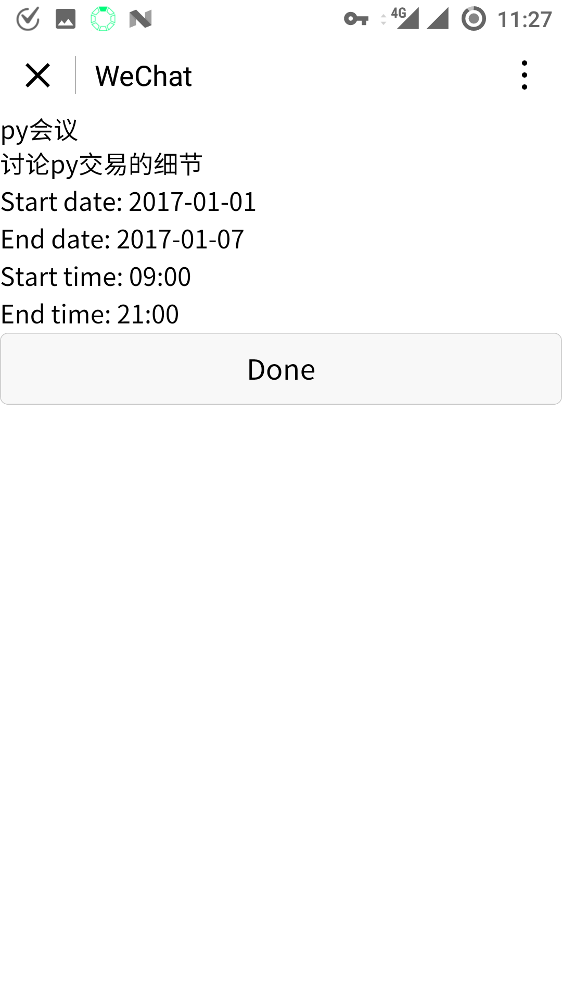
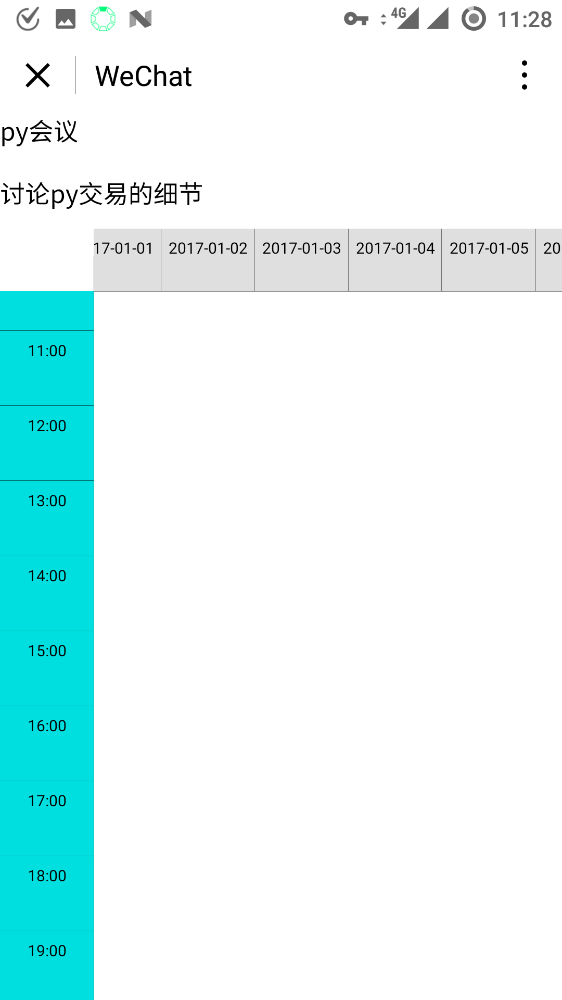
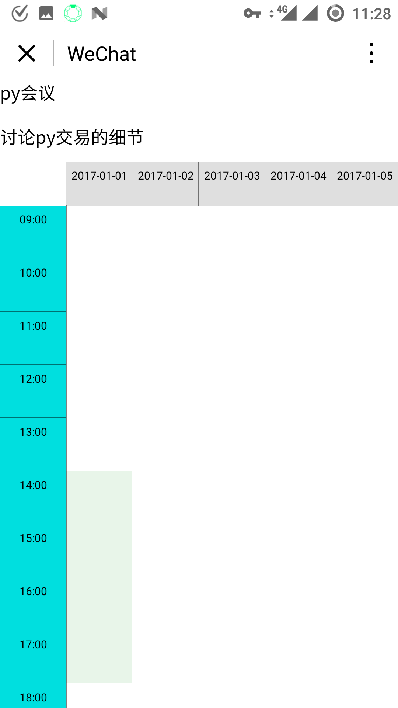
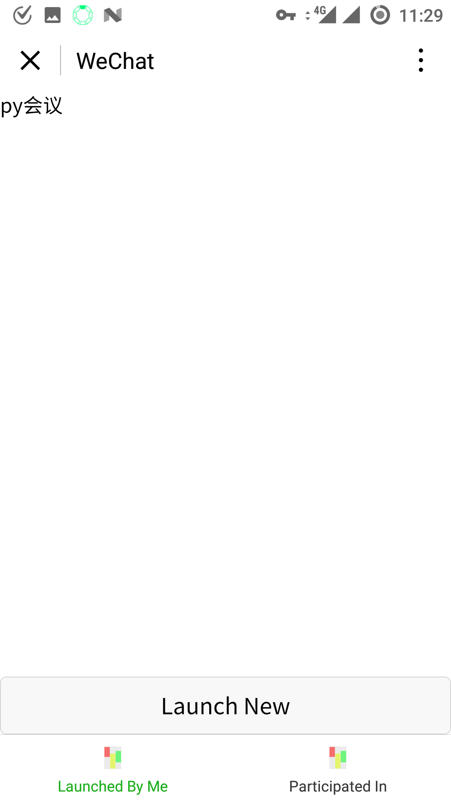
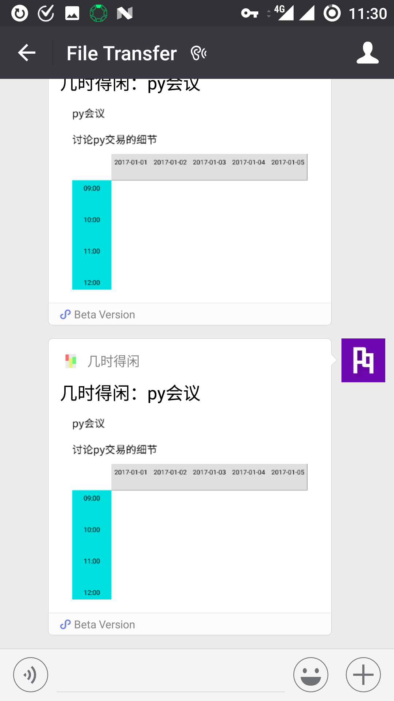
吐sai槽ting
最后是吐槽时间。
严厉谴责我的室友，居然没有一个愿意借我手机测试一下小程序，I am angry!
写了一天半的bug，感觉像是参加了黑客马拉松，果然不是普通代码狗能参加的啊……不过一天半写出一个小程序的雏形可见小程序的开发还是非常快速的，虽然还是不如西方记者快。
开发过程中很多操作都需要扫二维码授权，建议小程序开发者购买手机支架，把摄像头对准电脑显示器，极大开发效率。当然，你如果有女朋友的话让她帮你扫码也是可以的。啊不对，有女朋友居然还能安静地写代码？……不对，我女朋友们就在帮我写代码啊：）
写小程序的感想如图所示：
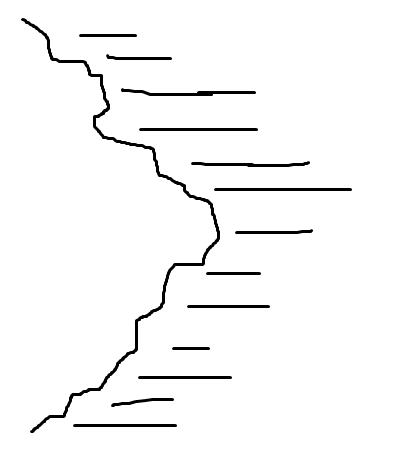
最后关于这个小程序，由于官方提示不要发布demo或测试版本，所以我只能说，无可奉告！等我再有两天闲着，再来完善和优化，然后发布吧，近期找个机会把代码丢到GitHub上。
好了，明早我要继续赶多周期流水线无冲突16位超精简指令集很TM超级无敌棒的CPU了Orz